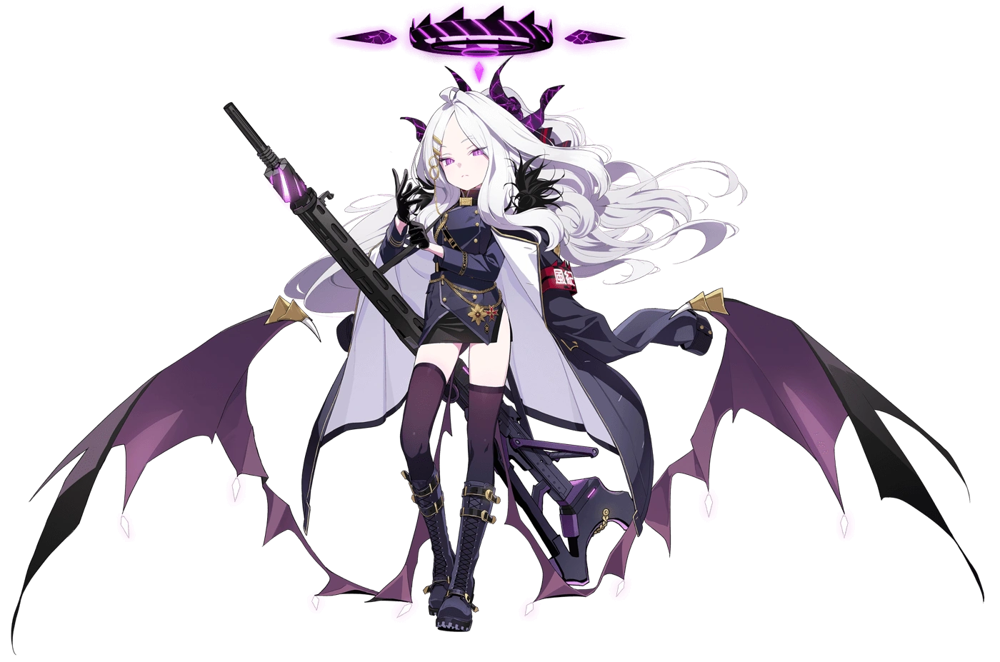

Kivotos QC Inspector System
Aplikasi manajemen inspeksi kualitas produk berbasis web untuk pencatatan real-time hasil uji visual, dimensi, status OK/NG, dan kalkulasi AQL (Acceptable Quality Limit).
OPS: LIVE
Aplikasi manajemen inspeksi kualitas produk berbasis web untuk pencatatan real-time hasil uji visual, dimensi, status OK/NG, dan kalkulasi AQL (Acceptable Quality Limit).
Sistem pemantauan outgoing quality control cetakan plastik injection. Menganalisis defect produk (shrinkage, flash, short shot) serta mengotomasi isolasi karantina sesuai standar 5S & K3.
Kumpulan proyek dan modul pemrograman selama perkuliahan S1 Teknik Informatika di Universitas Pelita Bangsa: algoritma struktur data, basis data, dan arsitektur web modern.
Web portofolio interaktif yang mengombinasikan visual dinamis Persona 5 dengan aesthetic Blue Archive (Kivotos HUD, sound synthesizer Web Audio API, dynamic character companion).
"Pan-paka-pan! Aris telah membuka artefak proyek Jamaludin! Seluruh kode aplikasi dan sistem QC beroperasi pada status 100%!"
"Fufun~ Nilai evaluasi Quality Control 96%, pemahaman 5S & K3, dan logika informatika terhitung sangat presisi. Jamaludin memang operator yang cerdas!"
"Aa, Sensei... Riwayat kerja di PT. Injeksi Plastik Pasifik dan perkuliahan S1 Teknik Informatika di Universitas Pelita Bangsa telah diverifikasi. Zero defect, zero negligence."

Individu yang berdedikasi tinggi dengan pengalaman kerja nyata dalam melakukan evaluasi produk, pembuatan laporan harian, dan manajemen alur kerja. Memiliki tingkat ketelitian yang tajam dan kemampuan komunikasi yang baik untuk berkolaborasi lintas departemen. Memiliki motivasi tinggi untuk terus berkembang, mempelajari hal baru, dan memberikan kontribusi terbaik bagi perusahaan.
"Sensei, okaeri! Jalur transmisi SCHALE sudah dibuka! Mau kirim pesan via Gmail, follow Instagram, atau invite Discord? Mika tunggu ya~"